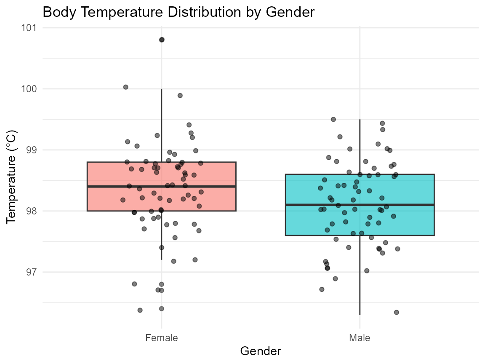

healthmotionR: A Comprehensive Collection of Health and Human Motion Datasets
Source:vignettes/healthmotionR_vignette.Rmd
healthmotionR_vignette.Rmd
library(healthmotionR)
library(dplyr)
#>
#> Attaching package: 'dplyr'
#> The following objects are masked from 'package:stats':
#>
#> filter, lag
#> The following objects are masked from 'package:base':
#>
#> intersect, setdiff, setequal, union
library(ggplot2)Introduction
The healthmotionR package provides a comprehensive collection of datasets related to health, biomechanics, and human motion. It was designed to support researchers, analysts, and students who are interested in exploring clinical, physiological, and kinematic data.
The datasets included in this package cover a wide variety of domains, such as:
- Clinical outcomes from surgical procedures
- Physiological signals and vital signs
- Rheumatoid arthritis and osteoarthritis data
- Accelerometry and gait analysis measurements
- Motion sensing and biomechanics experiments
By providing this broad set of curated data sources, healthmotionR facilitates reproducible research, teaching, and analysis in fields such as health monitoring, physical activity assessment, and rehabilitation. The goal of the package is to simplify access to high-quality data, enabling users to focus on methodology, modeling, and interpretation rather than on data collection and preprocessing.
In the following sections, we introduce the structure of the package, describe the datasets available, and provide examples of how they can be used for analysis.
Dataset Suffixes
Each dataset in the healthmotionR package uses a
suffix to denote the type of R object:
_df: data frame_tbl_df: tibble_list: list_array: array_char: character
Below are selected example datasets included in the
healthmotionR package:
body_metrics_df: Data frame containing measurements of body temperature and heart rate for 130 healthy individuals.run_biomech_tbl_df: Running Injury Clinic Kinematic Dataset.
Data Visualization with healthmotionR Datasets
body_metrics_df
# Process dataset
body_metrics_df %>%
mutate(gender = ifelse(gender == 1, "Male", "Female")) %>%
ggplot(aes(x = gender, y = temperature, fill = gender)) +
geom_boxplot(alpha = 0.6) +
geom_jitter(width = 0.2, alpha = 0.5, color = "black") +
labs(
title = "Body Temperature Distribution by Gender",
x = "Gender",
y = "Temperature (°C)"
) +
theme_minimal() +
theme(legend.position = "none")
Conclusion
The healthmotionR package provides an accessible and diverse collection of datasets that cover essential aspects of health, biomechanics, and human motion. By integrating clinical, physiological, and kinematic information from multiple sources, the package offers a practical resource for researchers, analysts, and students.
With its curated datasets, healthmotionR facilitates reproducible research and supports learning in areas such as health monitoring, physical activity, and rehabilitation. Users can focus on data exploration, analysis, and methodological development without the burden of extensive preprocessing.
Ultimately, the package is intended to serve as a foundation for advancing knowledge in health-related data science and biomechanics, encouraging both applied analysis and innovative research.